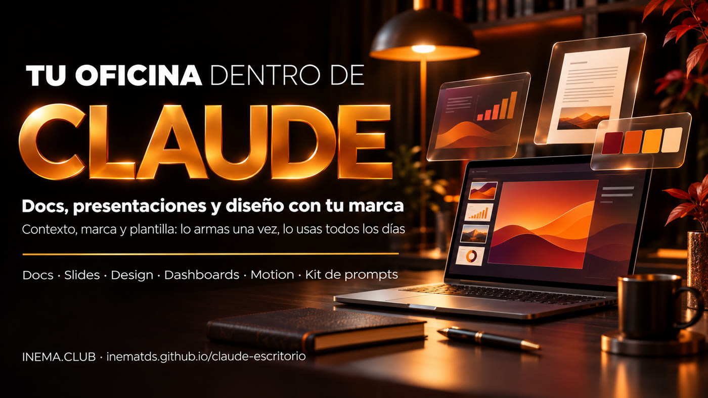

Documentos, presentaciones y diseños con la identidad de tu empresa, creados en una conversación; tres de ellos incluso en el plan gratuito. Configúralo una vez en 4 pasos y deja de empezar desde cero.

Este es un kit gratuito para usar Claude como oficina: redactar documentos, preparar presentaciones, crear piezas de diseño y, en algunos planes, paneles de datos y animaciones. Está pensado para quienes trabajan solos o en equipos pequeños y están cansados de explicar su marca y su negocio cada vez. El kit incluye un modelo de «quién soy» para pegar en un Proyecto de Claude, prompts listos para cada herramienta y una lista de verificación de lo que incluye cada plan. Para usarlo, solo necesitas una cuenta de Claude (la gratuita ya sirve para Docs, Slides y Design) y un navegador.
Artifacts es el nombre que Claude les da a las cosas que creas con él y que quedan guardadas: documentos, presentaciones, diseños y paneles. Aparecen en la pestaña Artifacts (en el menú de la izquierda de claude.ai o directamente en claude.ai/artifacts). Allí eliges un modelo o simplemente lo pides en la conversación. Lo que creas es privado hasta que lo compartes y se puede exportar como PowerPoint, Google Slides, PDF, MP4 o HTML.
Una buena herramienta sin contexto entrega resultados genéricos. El kit empieza con un Proyecto que le dice a Claude quién eres, qué ofreces y cómo te comunicas.
Un design system —el «manual de marca» que Claude guarda y usa por su cuenta: colores, fuentes, logo y estilo— creado a partir de un PDF, capturas del sitio o del logo. Con una sola referencia basta para empezar; después, todo tendrá tu sello.
La primera propuesta o el primer informe que quede bien se convierte en modelo. Los siguientes parten de ahí, con la misma estructura y el mismo estilo visual.
Nombres oficiales: Claude Docs, Claude Slides, Claude Design, Claude Dashboards y Claude Motion. Verificado en las páginas de Anthropic el 04/11/2026.
El documento que escribes junto con Claude y tu equipo, al mismo tiempo.
Presentaciones hechas a partir de notas, informes o lo que ya está en la conversación.
Publicaciones, folletos, one-pagers, páginas de venta y prototipos con tu design system.
Una pregunta en español se convierte en un panel que se actualiza y se conecta a tu base de datos o sistema de ventas (CRM, como Salesforce).
Animaciones breves creadas con código, que se reproducen como video y se descargan en MP4.
Son privadas por defecto; puedes invitar a otras personas a «ver» o «editar». Se pueden editar desde el celular. Anthropic afirma que ya se crearon más de 45 millones de documentos, presentaciones y diseños en Claude.
Configúralo una vez y úsalo todos los días. Los pasos 1 y 2 toman una tarde; los pasos 3 y 4 se repiten cada semana.
No tienes que instalar nada. Todo sucede en el navegador o en la app de Claude.
El plan gratuito ya incluye Docs, Slides y Design. Dashboards requiere un plan pago; Motion, un plan Team o Enterprise. Consulta la tabla de planes.
Un PDF o una presentación que te guste, capturas de las páginas del sitio o el logo. Con una referencia basta para empezar.
La propuesta, el informe o la publicación que haces cada semana. Esa será tu primer modelo.
Cada paso tiene un archivo listo en el kit. Haz clic en el nombre del archivo, usa el botón Copy raw file (ícono de dos hojas) en GitHub, reemplaza lo que está entre [corchetes] y pégalo en Claude.
En claude.ai, abre Projects (menú de la izquierda) › New project. Dentro del Proyecto hay un campo de Instructions: pega ahí el modelo kit/contexto/instrucoes-do-projeto.md ya completado. ¿Prefieres no completarlo por tu cuenta? Usa el prompt para que Claude te entreviste. Para ver cómo queda, abre el ejemplo completado (una consultora para clínicas). Sube también 2 o 3 archivos de referencia (una presentación comercial o una propuesta que haya funcionado).
# kit/prompts/01-entrevista-contexto.md (fragmento) Quiero crear las instrucciones de un Proyecto en Claude para que trabajes como mi asistente de oficina. Entrevístame. - Haz una pregunta breve por vez y espera mi respuesta. - Incluye: quién soy; mi oferta; mis clientes y sus objeciones; pruebas reales; mi forma de hablar; mi marca. - No inventes nada. Deja fuera lo que no sepa.
Adjunta el PDF de tu marca, capturas del sitio o el logo y pide el design system. Extrae colores, fuentes, uso del logo y estilo. El resultado es aproximado: revisa una vez los colores con la hoja kit/design-system-modelo.md. Después, para verlo o editarlo: en la configuración de Claude, busca Design systems (en la app en inglés aparece en Settings › Capabilities).
# kit/prompts/02-design-system.md (fragmento) Adjunté el PDF de mi marca. Crea un design system para mi marca. 1. Extrae: paleta (código y uso de cada color), fuentes, logo sobre fondo claro y oscuro, espaciados, esquinas, estilo de los íconos y las fotos. 2. Muéstrame una muestra: portada de presentación, diapositiva, publicación cuadrada, botón. 3. Enumera lo que NO encontraste en los archivos y pregúntame antes de inventar.
Elige la herramienta según la pieza. El caso que más tiempo ahorra: de la reunión a la propuesta. Pega las notas de la reunión, pide que investigue el sitio del cliente y que prepare una propuesta con el logo del cliente en la portada, no el tuyo.
# kit/prompts/03-slides-proposta.md (fragmento) Crea una propuesta en diapositivas para [CLIENTE], con mi design system. 1. Primero, muéstrame la estructura y espera mi OK. 2. Investiga el sitio público de [cliente.com.br] y enumera 3 preguntas pendientes. 3. Portada con el nombre y el logo DEL CLIENTE. 4. Problema → qué cambia → cómo lo hacemos → plazo → inversión → siguiente paso. 5. Máximo 10 diapositivas, con notas del presentador. No inventes cifras.
Otras piezas: documento con el Claude de un colega (04-docs-colega.md), publicación o página de venta (05-design-peca.md), panel de números (06-dashboard-numeros.md) y animación (07-motion-explicativo.md).
Cuando apruebes una pieza, pídele a Claude que describa su estructura y guárdala en el Proyecto como «Modelo de …». A partir de ahí, solo tienes que pedir «igual al modelo» y cambiar lo nuevo. Compártelo con el equipo para que puedan «ver» o «editar».
# kit/prompts/08-reusar-modelo.md (fragmento) Nueva propuesta para [cliente], igual al «Modelo de propuesta». Qué cambia: [notas de la nueva reunión]. Antes de armar todo, muéstrame solo lo que cambió respecto al modelo.
Un buen panel responde a una sola pregunta: «¿estoy llegando a donde quiero?». Separa el indicador que quieres alcanzar al final de los que puedes mover hoy.
| Negocio | Indicador de resultado (el objetivo) | Indicadores que impulsan (lo que puedes cambiar) |
|---|---|---|
| Clínica | Consultas realizadas en el mes | Primeras consultas agendadas · ausencias confirmadas el día anterior · citas de seguimiento agendadas |
| Consultoría | Ingresos del mes | Reuniones realizadas · propuestas enviadas · propuestas respondidas |
| Tienda en línea | Pedidos pagados | Visitas · carritos abiertos · carritos recuperados |
| Canal de videos | Suscriptores | Videos publicados por semana · visualizaciones por video |
Ejemplos ilustrativos. Antes de compartir el panel, haz clic en cada número y verifica la consulta y la fecha de la última actualización: Anthropic no ha publicado una tasa de acierto de las consultas.
¿No sabes qué plan tienes? Settings › Plan. Verificado el 04/11/2026 en claude.com/features/artifacts y en el centro de ayuda de Claude. Los planes cambian: consulta claude.com/pricing.
| Herramienta | Gratuito | Pro / Max / Ultra | Team | Enterprise |
|---|---|---|---|---|
| Docs | ✅ sí | ✅ sí | ✅ sí | ✅ sí |
| Slides | ✅ sí | ✅ sí | ✅ sí | ✅ sí |
| Design + design system | ✅ sí | ✅ sí | ✅ sí | ✅ sí |
| Dashboards | ❌ no | 🧪 beta | 🧪 beta | 🧪 beta (lo habilita el administrador) |
| Motion | ❌ no | ❌ no | 🧪 beta | 🧪 beta (lo habilita el administrador) |
El sitio separado claude.ai/design cerrará el 14/12/2026. Quienes tengan un design system allí pueden migrarlo desde la página Artifacts («Migrate team design systems»).
«Haz una diapositiva sobre mi servicio» sin un Proyecto da como resultado una diapositiva de cualquier empresa. Haz primero el paso 1.
Un número, testimonio o cliente inexistente destruye la confianza. La regla «no inventes, pregunta» ya está en el modelo de instrucciones.
En el material para el cliente, la portada es suya: su nombre y su logo. El tuyo va al final.
Dashboards muestra la consulta de cada número. Haz clic y revísala antes de enviárselo a alguien.
La pieza aprobada se convierte en un modelo (paso 4). Así es como ahorras tiempo.
Todo es privado al crearse. Invita solo a quienes lo necesitan, con permiso para «ver» o «editar».
Haz clic en el nombre del archivo para abrirlo en GitHub. Usa el botón Copy raw file (ícono de dos hojas, en la esquina superior derecha del texto) y pégalo en Claude. No necesitas una cuenta de GitHub.
| Archivo | Para qué sirve |
|---|---|
kit/contexto/instrucoes-do-projeto.md | Modelo de «quién soy» para las Instructions del Proyecto (paso 1) |
kit/contexto/exemplo/instrucoes-clinica.md | El mismo modelo completado con un ejemplo ficticio |
kit/prompts/01-entrevista-contexto.md | Claude te entrevista y redacta el contexto |
kit/prompts/02-design-system.md | Tu marca se convierte en un design system (paso 2) |
kit/design-system-modelo.md | Hoja para revisar colores, fuentes y logo |
kit/prompts/03-slides-proposta.md | De la reunión a la propuesta en diapositivas |
kit/prompts/04-docs-colega.md | Documento con Claude para un colega + rutina semanal |
kit/prompts/05-design-peca.md | Publicación, folleto o página de venta con tu marca |
kit/prompts/06-dashboard-numeros.md | Elegir los números y armar el panel |
kit/prompts/07-motion-explicativo.md | Un informe se convierte en una animación de 30 segundos |
kit/prompts/08-reusar-modelo.md | La pieza aprobada se convierte en un modelo (paso 4) |
kit/checklist-planos.md | Qué incluye tu plan + lista de verificación antes de compartir |